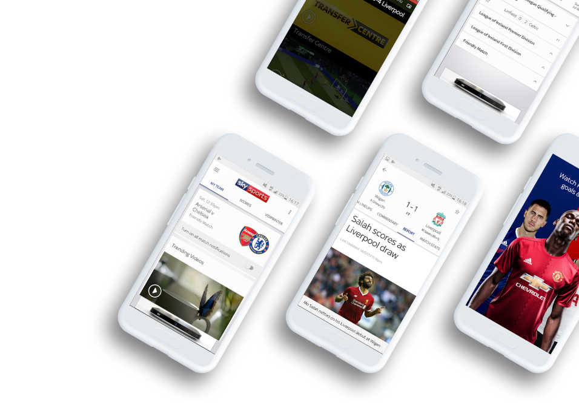
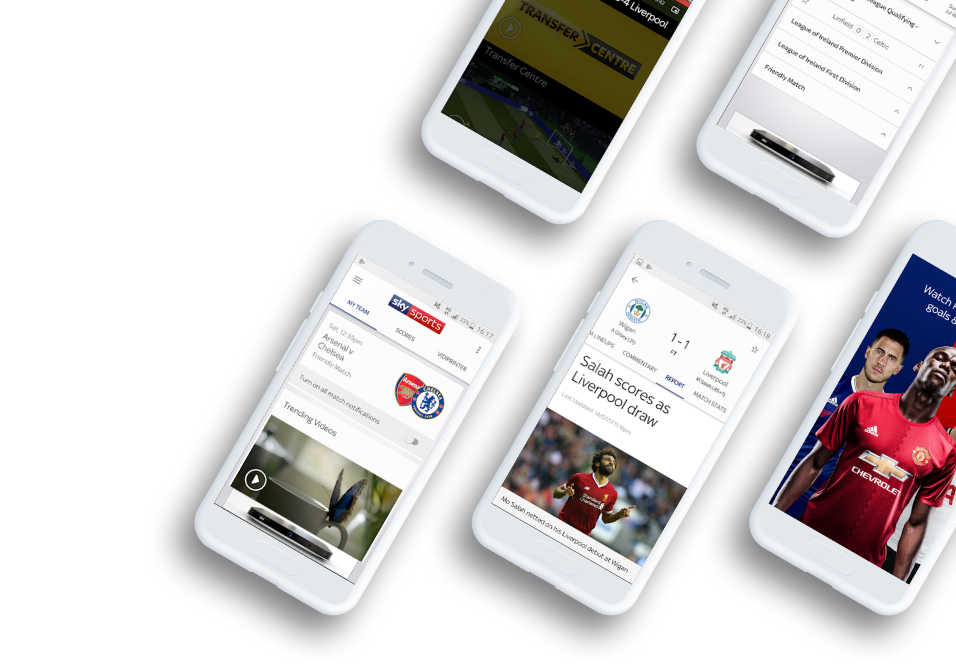
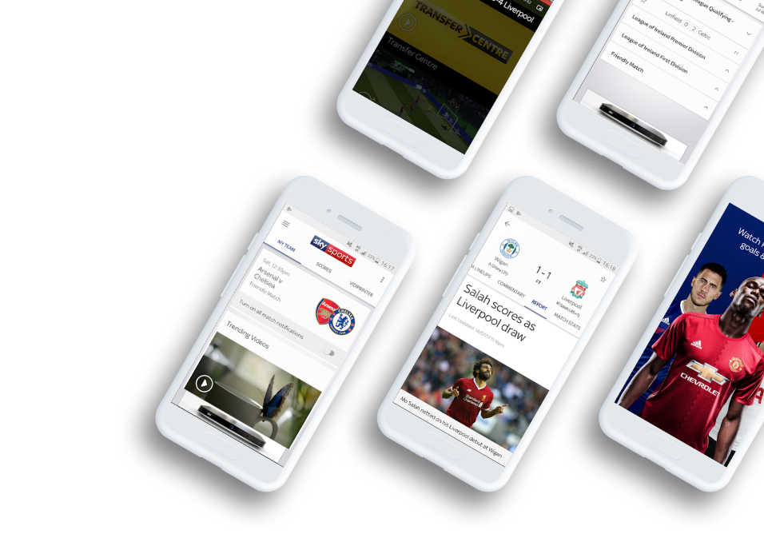

Sports
Sports
Get a personalized football experience tailored just for you
Achieve super-fan status by getting tailored updates and up-to-the-minute information on your team.

 
Sports

Sports
Achieve super-fan status by getting tailored updates and up-to-the-minute information on your team.

The Guardian Live Scores app is your go to app for live scores and watching Premier League goals… Get in there,
what a result!
As well as videos of all the goals, you can watch match highlights, check out the latest scores and results and
stay bang-up-to-date with the big football stories from The Guardian publication.
The in-game goal clips from every Premier League match are available to Guardian TV customers with a Guardian
subscription.
So, if you’re not a subscriber, now’s time to make that savvy call. If that’s a step too far for you, you
can still watch loads of firecracker Premier League action as long as you sign in with a free Guardian iD.

 Match pages showing live scores, commentary, team
line-ups and enhanced match stats to keep you up-to-date
on all the action
Match pages showing live scores, commentary, team
line-ups and enhanced match stats to keep you up-to-date
on all the action
 Live updated league tables including all the
domestic, European and major leagues and tournaments
Live updated league tables including all the
domestic, European and major leagues and tournaments
 Match reports, previews and a dedicated news section
Match reports, previews and a dedicated news section
 And you can achieve super-fan status by
personalising your home page with up-to-the-minute information on
your team.
And you can achieve super-fan status by
personalising your home page with up-to-the-minute information on
your team.
 Noah Jackson
Noah JacksonI use this app every day and it's a great way to keep up to date with what's going on in football. It's a shame it won't rotate into landscape mode like its main competitor
 Darren Wilson
Darren WilsonGood for scores and commentary but the team lineups have stopped working.
 Michael Akinuli
Michael AkinuliGood for watching the goals and great for highlights instead of waiting till 10:30 before you can watch highlights on March of the day also no need of sky go


If you’re interested in the scores of more than one team (it’s OK, we won’t tell your mates you support two clubs!), you can choose the scores and competitions that matter to you using the ‘My Scores’ section. So, make sure you’re a top-flight football fan by downloading the Football Score Centre now. It’s got all this: